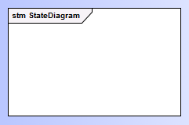
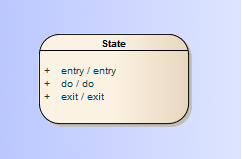
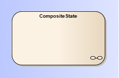
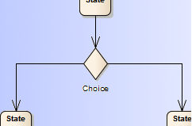
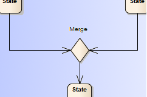

|
sttcl
2.0
|
|
sttcl
2.0
|
|
UML state machine diagram notation |
GoF State design pattern element |
|---|---|
|
The state machine diagram itself |
A Context class instance. |
|
A state (atomic) |
A State class instance (ConcreteStateA, ConcreteStateB). |
|
<Internal event>:= entry, do, exit, <event>
|
A call to the State classes entry(), exit() or do() operation. |
|
A composite state. The internal states are modeled in a sub-state machine diagram |
A State class instance, that also serves as another Context classes instance. |
|
|
A call of the Context::changeState() operation. |
|
<event> An event that triggers the associated transition |
A call to a public Context::operation() operation, that delegates behavior to a State::handleEvent() operation. All events visible in the state machine diagram can be triggered via the public Context::operation() operations. |
|
[guard] A conditional expression, that must return true to execute the associated transition. Guard conditions that are associated to the same source state must be mutually exclusive. |
A conditional statement inside the Context::operation() or State::handle() operations, that decides to call Context::changeState(). |
|
: action, …
|
The specified action operations are called inside the implementation State::handleEvent() event handler operation1. The calling order may be unspecified. |
|
|
This requires concurrent program execution mechanisms (e.g. threading) supported by an operating system. Each region defines an associated State
class reference, to delegate the event handling to a
State::handleEvent()
operation concurrently. STTCL provides the ConcurrentCompositeState<> and Region<> template base classes to design these UML features. |
|
UML state machine diagram notation |
GoF State design pattern implementation |
|---|---|
|
Pseudo-States |
|
|
|
A constructor call to create a Context class instance in the simplest case. The constructor calls the Context::changeState() operation to set the initial State reference.
If any events and/or guards are specified for the associated outgoing transitions, the Context class should provide a property attribute to check it's initialization status, and leave the decision, which initial State reference to set, to the associated Context::operation() event operations. This behavior may be encapsulated in a Context::initialize() operation. |
|
An exit point of the state machine diagram. Final pseudo-states never have the source role of a transition. |
A State class implementation, that never calls the Context::changeState() operation. |
|
An exit point of a state machine or composite state triggered by the incoming transition's event. |
A Context::finalize() operation, that calls the actual State references exit() operation. |
|
|
A destructor call to a Context class instance in the simplest case. |
|
Represents the most recent active configuration of a composite state. In opposite to the shallow history pseudo-state, this includes all sub states of all regions and their recently active sub states recursively. |
The composite Context class instance must keep track of the most recent sub State reference, when the composite State classes exit() operation is called. When the composite State classes enter() operation is called later on, the composite Context class directly transits to the remembered most recent sub State reference.
STTCL composite state classes provide the HistoryType template parameter to determine the history behavior. |
|
|
The same behavior as described for the deep History. But In case, that a reentered sub State reference also represents a composite state, it's composite Context class must be (re-)initialized.
STTCL composite state classes provide the HistoryType template parameter to determine the history behavior. |
|
|
A fork represents the initiation of
concurrently executed operations (i.e. tasks, threads) of a
composite Context
class. |
|
|
A join represents a synchronization
point (i.e. semaphore, mutex) for formerly initiated
concurrently executed operations of a composite Context
class. |
|
A
Choice. Serves to select the outgoing transitions according
runtime conditions represented by the guards, associated to them.
The guard conditions must be mutually exclusive, to choose a
certain transition path. The model requires at least one of the
guard conditions to evaluate to true, therefore one of the
outgoing transitions should cover the else/default case. |
A Choice can be implemented as a if ...else if ..else or switch conditional block in a State classes implementation (ConcreteStateA, ConcreteStateB)., that choose the appropriate target State reference parameter for a call to the Context::changeState() operation.
Note: Choices don't serve to split transition paths into concurrently executed operations! |
|
A
Merge. Serves to combine alternate execution flows into a single
outgoing transition. |
A Merge can be implemented as an operation, that is shared by a number of State class implementations (ConcreteStateA, ConcreteStateB), and ends up in a single call of Context::changeState() operation. The decision to call this operation is done in the implementation of the State::handleEvent() operation, according the associated guard condition. |
|
|
The Junction serves complex
conditional path transitions that can be implemented in a similar
way as the Choice and Merge pseudo-states. |
1 Action operations that appear on a transition are not allowed to access the contexts state. In fact these operations should be performed after the current state was exited and before the new state is entered. That's difficult to achieve with the GoF State design pattern, since changing state is an atomic operation in the Context class.
 1.7.5.1
1.7.5.1 

 Separates
concurrently active regions within a composite state or state
machine diagram.
Separates
concurrently active regions within a composite state or state
machine diagram. An
entry point of the state machine diagram. Initial pseudo-states
never have the target role of a transition.
An
entry point of the state machine diagram. Initial pseudo-states
never have the target role of a transition. Exits
the composite state or state machine triggered by the incoming
transition's event.
Exits
the composite state or state machine triggered by the incoming
transition's event. Represents
the most recent sub state of a composite state. A composite state
can have at most one history pseudo-state. At most one transition
to the default sub state may originate the history pseudo-state.
This transition is executed in case the composite state was never
active before.
Represents
the most recent sub state of a composite state. A composite state
can have at most one history pseudo-state. At most one transition
to the default sub state may originate the history pseudo-state.
This transition is executed in case the composite state was never
active before. A
Fork. Serves to split a single incoming transition into
concurrently executed outgoing transitions. No guards are allowed
on any associated transitions.
A
Fork. Serves to split a single incoming transition into
concurrently executed outgoing transitions. No guards are allowed
on any associated transitions. A
Join. Serves to synchronize multiple concurrently executed
incoming transitions into a single outgoing transitions. No
guards are allowed on any associated transitions.
A
Join. Serves to synchronize multiple concurrently executed
incoming transitions into a single outgoing transitions. No
guards are allowed on any associated transitions. A
Junction. Serves to share transition paths for the incoming
transitions. The incoming and or outgoing transitions have guard
conditions associated. Incoming transitions are shared between
the source states. Outgoing transitions must have mutually
exclusive guard conditions. The model requires at least one of
the guard conditions to evaluate to true, therefore one of the
outgoing transitions should cover the else/default case.
A
Junction. Serves to share transition paths for the incoming
transitions. The incoming and or outgoing transitions have guard
conditions associated. Incoming transitions are shared between
the source states. Outgoing transitions must have mutually
exclusive guard conditions. The model requires at least one of
the guard conditions to evaluate to true, therefore one of the
outgoing transitions should cover the else/default case.